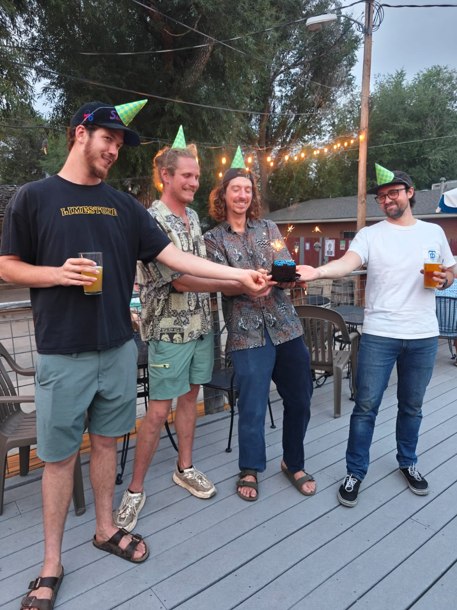

Electronic Press Kit
Electronic Press Kit
Converging in Fort Collins, Porch Talk is a group of friendly transplants who've grown up and traveled coast to coast to hang out in the now. Bringing together a multitude of life experiences, influences, and styles, Porch Talk is built on having fun and loving to create.
A four piece band made up of Timmy (guitar/vocals), Zane (guitar/vocals), Kevin (drums), and John (bass/mandolin/vocals), each member contributes to the vision of Porch Talk. The group is constantly writing new material and recording their own music in the unofficial Treehouse Studios. Inspired by good conversations on a nice porch—often fueled by coffee, fresh air, and sunshine—their songs reflect everyday life and a love for creating. Porch Talk is simply themselves and grateful to be part of the evolving Northern Colorado music scene.

